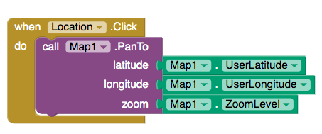

Describe an algorithm for identifying the card that was flipped.
"// “Place down the initial row and column of cards face down” // “Then have a random amount of cards flipped up within the row and column” // “Count the number of faced cards” // “Add in a parity row and column that makes the number of faced cards even” // “Determine errors, if faced cards are not even within a row or column then there is an error. // “fix error, by flipping the card to its original placement to make sure it is even. "
The card "trick" shows that it is always possible to identify the card that was flipped as long as only one card was flipped. Would it be possible always to determine if an error occurred if two cards were flipped?
Yes, it is always possible to identify an error when two cards are flipped. This is the case because the cards are set up in a way in which the rows and columns of the cards are able to indicate an error. If there were two cards that were flipped, we would be able to determine that there will be two errors indicated by the rows and columns, it will just be harder to find the exact position of where the error is occuring.
Explain how the error card trick from the Error Detection lesson uses a parity scheme. Was it an even or odd parity scheme?
The error card trick used in Error Dectection Less used a parity scheme by represeting all cards as bits, once flipped it would show your pairty bit. The parity scheme was even.
What are some of the limitations of using parity bits for error detection?
Some limitaitons of using parity bits for error detection is that it can only find one parity bit at a time, once there is more parity bits the trick would not work.
Another type of error detection is a check sum. Research what a check sum is and then describe it in your own words. Can a check sum identify where an error occurs?
A checksum is a number derieved from data that allows it to dectect any errors that have gone through. Yes, a check sum can identify where an error is occured by leaving a different number down.
How are lists used in this app? Why is a list a useful data abstraction or an abstract data type (ADT) in programming? Is it easy to add new destinations to the tour?
List are used in this app by letting users be able to place down points in any destination. This is a useful data abstraction in programming because it allows the code to be simplier and easier to understand but it is not easy to add a new destination to the tour because there are so many other codes needed to be added too.
How do APIs simplify complex programming tasks? Pick an app that you use on your device (e.g. Twitter, Google Maps) and see whether it provides an API and some of the functions you can control with it. Describe your results below.
APIs simplify complex programming task by creating an output and allow programs to talk to it. I chose Google maps and when I clicked onto the address I typed into I was sent to the image or "map" of that location.
How is GPS used in this app? Do some research to find out how GPS works and describe it here in a couple sentences.
GPS is used in this app with the my location button enhancement, showing where the person using the app is. GPS works by connecting 30 satellities around the earth and would ping satellities, once it ends up with the closes 3 satellities around you and it can pin point your exact location with latitude and longitude.
Insert screenshots of the enhancements that you made below and describe how they work.
One enhancement that I made was the location button, so when clicked on the button it'll bring you to your current location. I did this by using the "My Location.click do" then "call Map1. Pan to Lat, Long, Zoom.
What does it mean to say that data is 'persistent'?
When data is "persistent" it means the information would stay as long as it is kept onto the computer like the files in our computers, phones, laptops.
What's the difference, in terms of where data is located, for data stored in a global variable vs. data stored in a database?
The difference in terms of where data is located either in global variable or data stored in a database is that, data in a global variable would erase after the app is shut, while data stored in a database would be there as long as the device or app is never wiped.
Include screenshots and explanations of your enhancements.
Same as 3.8 question 4.
What is metadata? Give an example of how a piece of metadata could be used to increase the usefulness of an image or document.
Metadata is data that gives information about other data. An example would be the time or the data a document is created.
What is a model?
A model is a way to represent something that is non visable.
What's the difference between a raster image and an ASCII representation of a text document?
The difference between a raster image and an ASCII representation of a text document would be a raster image is a rectangular area of a display screen being used to diplay images, while a ASCII is a 8-bit code representing letters or numbers.
What are filename extensions? What are they used for?
Filename extensions are the 3 letters after a document, image, video, etc. It is used for the computerr to understand the format that they go into, like JPEG is lossy and PNG is lossless.
What is lossless representation? What is lossy representation? What are the trade-offs in using each representation?
A lossy representation would be a JPG image or a MP3 file, this is where things are rendered but some things are taken out to save storage, even though this is done it does not affect the image to a human eye. A lossy representation would be a PNG file, it renders documents or images the way they were shared, nothing was change or lost. The trade-offs of using each representation is that lossy would give you a lower quality photo, while lossless would take more storage space.
What is steganography and what is it used for? Describe in your own words the steganography algorithm used in the activity.
A steganography is hiding information by using bits of different invisiable information. In this activity we his the message in plain sight by using the first letter of the sentence and changed it into a word.
What would you have to do to delete a document from your computer so that it could not possibly be read by anyone else?
To delete a document you would have to drag the document into the trash bin, after go into the trash bin and click the throw away button, if not the item is still recoverable meaning it is still in the system.
What is free and open source software? Provide an example.
A software that is free if charge, an example would be snapchat, instagram, Facebook, etc.
How has retouching become a controversial issue? Give an example.
I believe retouching has become a controversial issue because you can change someones image or text with one touch of a button, which I feel is a volation of someones privacy. An example would when we had AI on a phone that could replicate our last president, Obama, and young people like kids would not be able to comprehend what is real or fake since people have such great power of technology.
Would you rather own a camera (or camera phone) with a higher number of megapixels or lower? Explain.
I would rather own a camera phone (iphone) because camera phones have better megapixels on pictures than some cameras do, also it'll save you money since you are getting a phone that you can play games, call, text, take good quality pictures, and be able to do much more.
Other than digital images, what might be an example of a computer model? Explain your answer based on the definition of a model.
An example of computer modeling could be a PDF because it has everything a digital image could have, letters, symbols, numbers, and etc.
^An example of computer modeling could be a PDF because it has everything a digital image could have, letters, symbols, numbers, and etc.
I think a open source software that gives a postive impact on education is Google Classroom because it allows teachers to connect with students by being able to share work, keep students updated, and keep students updated on due dates.